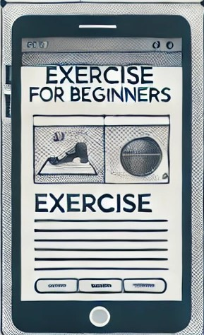
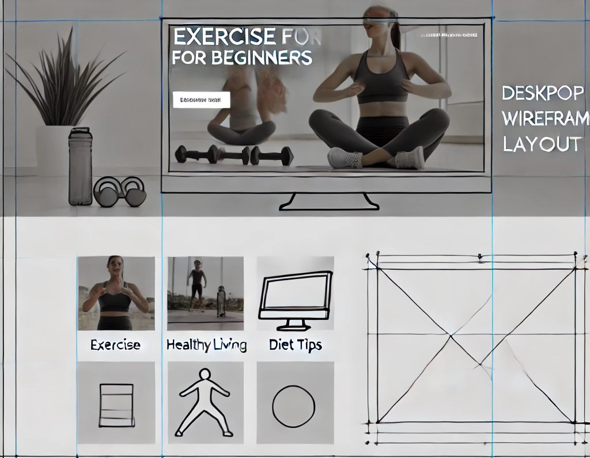

Welcome to Your Fitness Journey
This site is designed to help beginners with exercise routines, supplements, nutrition, and motivation. Let's get started!
Scenarios
Scenario 1: What are the best routines for beginners to start at home?
Scenario 2: What supplements should I take to complement my exercise routines?
Color Scheme
Main color: Blue (#1E90FF) - used for headers and buttons.
Secondary color: White (#FFFFFF) - used for the background and body text.
Accent color: Green (#32CD32) - used for links and call-to-action buttons.
Typography
Main font: "Roboto" - used for headers and titles.
Secondary font: "Open Sans" - used for the body text.
Wireframe
Below is a sketch of the homepage wireframe for both mobile and desktop views:
 